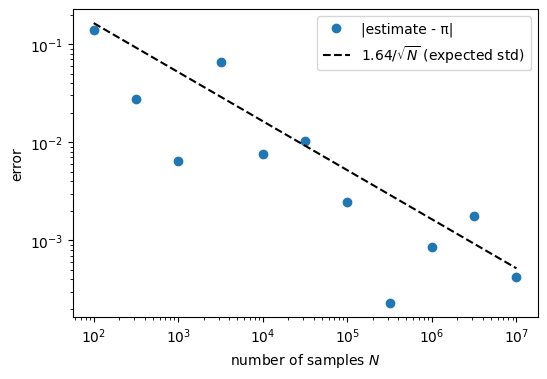
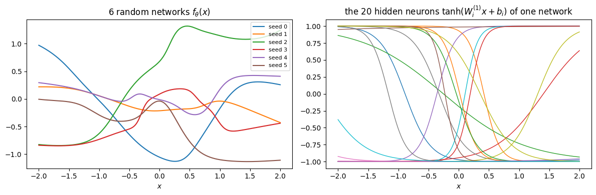
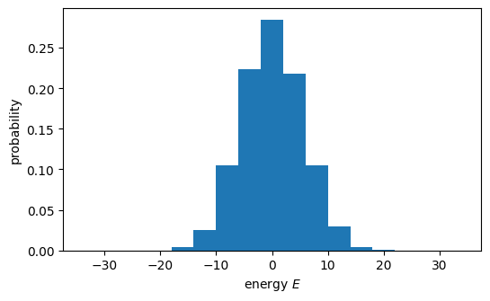
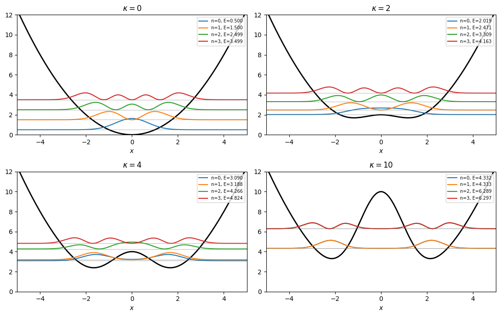
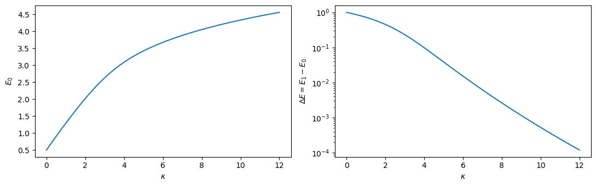
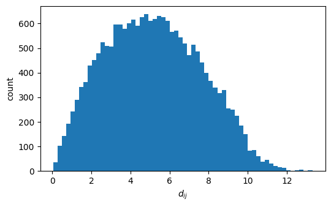

In the lecture we said: a neural network is a non-linear, parametrised function with a nested structure, \[f_{\vec\theta}(\mathbf{x}) = h^{(L)}\circ\cdots\circ h^{(1)}(\mathbf{x}), \qquad h^{(l)}(\mathbf{z}) = \sigma\big(\mathbf{W}^{(l)}\mathbf{z} + \mathbf{b}^{(l)}\big).\] Here \(\circ\) denotes composition of functions (\(g\circ h(\mathbf x) = g(h(\mathbf x))\)): the output of one layer \(h^{(l)}\) is the input of the next. \(\sigma\) is an activation function, a fixed non-linear function applied to every component separately (examples in Section 9). Every ingredient here — vectors \(\mathbf z\), matrices \(\mathbf W\), element-wise functions \(\sigma\) — is an array operation. NumPy is the Python library for arrays. PyTorch uses almost the same interface, so most of this notebook carries over with minor changes of names.
Plan 1. Why arrays? Loops vs. vectorisation 2. Creating arrays 3. Indexing, slicing and boolean masks 4. Reshaping and stacking 5. Broadcasting 6. Reductions along an axis 7. Linear algebra: the Schrödinger equation on a grid 8. Random numbers 9. Towards neural networks: a dense layer in NumPy 10. What NumPy cannot do 11. Summary 12. Exercises
How to run this notebook in Google Colab 1. Go to https://colab.research.google.com → File → Upload notebook (or open it from Google Drive). 2. Run cells one by one with Shift + Enter. Run them in order — later cells use variables defined earlier. 3. The required packages (numpy, matplotlib) are pre-installed in Colab; no pip install required. 4. If the notebook state becomes inconsistent: Runtime → Restart session and run from the top.
Code
import numpy as npimport matplotlib.pyplot as pltimport time# Display settings only (the stored numbers are not changed): 4 digits after the decimal point,# and tiny numbers such as 1e-17 are printed as 0. instead of in scientific notation.np.set_printoptions(precision=4, suppress=True)print("NumPy version:", np.__version__)
NumPy version: 2.2.6
1. Arrays: loops vs. vectorisation
Task: compute \(\sum_{i=1}^{n} x_i^2\) for \(n = 10^6\) numbers. First the “plain Python” way, then NumPy.
New tools in the cell below: - 1_000_000 is the number \(10^6\); Python ignores underscores in numbers, they only make long numbers readable. - time.perf_counter() returns the current time in seconds from a high-resolution clock. The difference of two calls is the time spent on the code between them. - An f-stringf"... {expr} ..." inserts the value of expr into the text. A format specification after a colon controls how a number is printed: {s:.6f} gives 6 digits after the decimal point, {t:7.2f} gives 2 digits in a field 7 characters wide.
The value \(n = 10^6\) is not special: it only has to be large enough that both run times are well above the resolution of the clock.
Code
n =1_000_000x_list = [i / n for i inrange(n)] # a Python listx_arr = np.array(x_list) # the same numbers as a NumPy arrayt0 = time.perf_counter()s =0.0for xi in x_list: # explicit Python loop s += xi**2t_loop = time.perf_counter() - t0t0 = time.perf_counter()s_np = np.sum(x_arr**2) # one vectorised expressiont_np = time.perf_counter() - t0print(f"loop : {s:.6f} time {t_loop*1e3:7.2f} ms")print(f"numpy: {s_np:.6f} time {t_np*1e3:7.2f} ms -> {t_loop/t_np:.0f}x faster")
loop : 333332.833334 time 90.63 ms
numpy: 333332.833333 time 2.37 ms -> 38x faster
The measured ratio depends on the computer and changes from run to run; in the run stored above, NumPy was about 40 times faster for \(n = 10^6\). The last digit of the two sums differs because the two methods add the numbers in a different order; floating-point rounding depends on the order, and both are correct to about \(10^{-12}\) relative accuracy.
Memory layout. A NumPy array is a contiguous block of memory holding numbers of one type; the loop over it runs inside NumPy, in code written in the language C and translated to machine instructions in advance (compiled). A Python list holds references to separate Python objects, each of which may be of a different type, and the Python loop is executed statement by statement by the Python interpreter, which checks the type of every element anew.
A for loop over the elements of an array can almost always be replaced by a shorter and faster NumPy expression.
2. Creating arrays
The most important attributes of any array: - a.shape — the size along each axis (a tuple), - a.ndim — the number of axes, - a.dtype — the type of the elements (float64, int64, complex128, bool, …).
Code
a = np.array([1.0, 2.0, 3.0]) # 1D array (a vector)M = np.array([[1, 2, 3], [4, 5, 6]]) # 2D array (a matrix): a list of rowsfor name, arr in [("a", a), ("M", M)]:print(f"{name}: shape={arr.shape}, ndim={arr.ndim}, dtype={arr.dtype}")
Common constructors. Mind the difference between arange (given step, end excluded) and linspace (given number of points, end included). For physics grids prefer linspace.
Code
print("zeros :", np.zeros(4))print("ones :", np.ones((2, 3))) # shape given as a tupleprint("arange :", np.arange(0, 1, 0.25)) # 0, 0.25, 0.5, 0.75 (the end point 1 is excluded)print("linspace :", np.linspace(0, 1, 5)) # 0, 0.25, ..., 1 (1 included)print("identity :\n", np.eye(3))print("full :", np.full(3, 7.0))print("zeros_like:", np.zeros_like(a)) # same shape & dtype as `a`
dtype matters. NumPy chooses the dtype from the entries: M above was written with integers only and became int64, while a contains 1.0 and became float64. Integer arrays stay integer under +, -, * and //, but / always returns floats (see below); complex numbers are built in (1j is the imaginary unit). The number in the name is the number of bits per element: float64 uses 8 bytes and keeps about 16 significant digits, float32 uses 4 bytes and keeps about 7. Deep learning usually uses float32 (faster, less memory), scientific computing float64 (more precise).
Code
i = np.array([1, 2, 3])print(i.dtype, i /2, (i /2).dtype) # division promotes int -> floatpsi = np.array([1, 1j]) / np.sqrt(2) # a qubit state (|0> + i|1>)/sqrt(2)print(psi, psi.dtype, "norm^2 =", np.sum(np.abs(psi)**2))# the squared norm is 0.9999999999999998, not exactly 1: floating-point numbers have about 16 significant digits,# so results of arithmetic are exact only up to rounding errors of order 1e-16print(np.float32(1/3), np.float64(1/3)) # 7 vs 16 significant digits
Boolean masks select the elements that satisfy a condition; they are used for selecting data.
Code
x = np.linspace(-3, 3, 13)mask = np.abs(x) <1.5# an array of True/Falseprint(mask)print("selected:", x[mask])y = x.copy() # an independent copy of x (see 'Views and copies' below)y[x <0] =0.0# set all negative entries to zero (this is the ReLU function)print("ReLU(x) :", y)
Basic slicing (start:stop:step) does not copy data: it returns a view on the same memory, and modifying the view modifies the original. Indexing with a boolean mask (as above) or with an array of integers returns a copy. .copy() creates an independent array.
Code
a = np.arange(5)b = a[1:4] # a VIEWb[0] =100print("a after modifying b:", a, " <- a changed as well")a = np.arange(5)c = a[1:4].copy() # an independent COPYc[0] =100print("a after modifying c:", a, " <- unchanged")
a after modifying b: [ 0 100 2 3 4] <- a changed as well
a after modifying c: [0 1 2 3 4] <- unchanged
4. Reshaping and stacking
The same numbers can be viewed with different shapes, as long as the total size agrees. -1 means that this dimension is inferred from the total size. reshape reads the elements row by row (the last index changes fastest) and fills the new shape in the same order, as the printout below shows. This is used frequently in deep learning: e.g. a \(28\times28\) image becomes a vector of length \(784\) before entering a dense layer.
Column vs. row vectors: a 1D array of shape (n,) is neither. An axis is added with None (or np.newaxis) to obtain shape (n, 1) or (1, n). Such shapes are needed for broadcasting in the next section: combining a (n, 1) column with a (1, m) row gives an (n, m) table.
Code
v = np.array([1.0, 2.0, 3.0])print(v.shape, v[:, None].shape, v[None, :].shape)
(3,) (3, 1) (1, 3)
Joining arrays: concatenate along an existing axis, stack along a new one:
Arithmetic between arrays of different shapes works if, comparing shapes from the right, each pair of dimensions is either equal or one of them is 1. If one array has fewer axes, its shape is first padded with 1s on the left: shape (3,) is treated as (1, 3), and a scalar as shape (), compatible with everything. The size-1 dimension is (virtually) repeated. No data are copied, so it is fast and memory-efficient.
shape of A
shape of B
result
(3,)
scalar
(3,)
(4, 3)
(3,)
(4, 3) — B added to every row
(4, 1)
(1, 3)
(4, 3) — an “outer” operation
(4, 3)
(4,)
error (3 ≠ 4) — use B[:, None]
Code
# 4 students (samples) x 3 features: height [m], mass [kg], age [years] (very different scales)X = np.array([[1.62, 55.0, 19.0], [1.80, 82.0, 23.0], [1.75, 70.0, 21.0], [1.68, 61.0, 30.0]])mean = X.mean(axis=0) # axis=0: average over the rows (samples), one mean per feature, shape (3,)std = X.std(axis=0) # divides by N (np.std default); X.std(axis=0, ddof=1) divides by N-1X_normalised = (X - mean) / std # (4,3) with (3,) -> broadcast over rowsprint(X_normalised)print("feature means now:", X_normalised.mean(axis=0), " stds now:", X_normalised.std(axis=0))# Standardising features like this is a standard preprocessing step before training a network.
An outer operation: a table of \(\sin(k x)\) for many \(k\) and many \(x\) at once — no loops. The result modes has shape (4, 200): element [i, j] is \(\sin(k_i x_j)\), so row i is the whole curve for wave number \(k_i\).
The cell also draws the first figure of this notebook (with a short reminder of Matplotlib): - fig, ax = plt.subplots(figsize=(7, 3.5)) creates a figure fig (the whole image, 7 by 3.5 inches) containing one coordinate system ax. Curves are drawn with methods of ax, and plt.show() displays the finished figure. - zip(k, modes) walks through two sequences in parallel: in each iteration kk is the next element of k and row the next row of modes (iterating over a 2D array gives its rows). - r"$\sin(kx)$" is a raw string: the r keeps the backslash literally, which the LaTeX command \sin needs. Text between $...$ is typeset as mathematics.
sum, mean, std, max, argmax, … collapse an array along an axis. Convention: axis 0 = samples, axis 1 = features (the same in PyTorch, where the argument is called dim; here the features are the classes). axis=k is the axis that is removed by the reduction. Below, scores has shape (4, 3) (4 samples, 3 classes): sum(axis=1) removes the class axis and returns shape (4,), one number per sample; mean(axis=0) removes the sample axis and returns shape (3,), one number per class. argmax returns the position of the largest element, counted from 0. keepdims=True keeps the reduced axis with size 1, e.g. scores.sum(axis=1, keepdims=True) has shape (4, 1), ready for broadcasting against scores.
Code
scores = np.array([[0.1, 0.7, 0.2], # e.g. network outputs for 4 images and 3 classes [0.8, 0.1, 0.1], [0.3, 0.3, 0.4], [0.05, 0.9, 0.05]])print("sum over classes (axis=1):", scores.sum(axis=1)) # each row sums to 1 -> probabilitiesprint("mean over samples (axis=0):", scores.mean(axis=0))print("predicted class (argmax): ", scores.argmax(axis=1))
sum over classes (axis=1): [1. 1. 1. 1.]
mean over samples (axis=0): [0.3125 0.5 0.1875]
predicted class (argmax): [1 0 2 1]
7. Linear algebra: the Schrödinger equation on a grid
@ is matrix multiplication; np.linalg contains solvers, determinants, eigenvalue routines.
Code
M = np.array([[2.0, 1.0], [1.0, 3.0]])v = np.array([1.0, -1.0])print("M @ v =", M @ v) # matrix-vector productprint("v @ v =", v @ v) # scalar productprint("M * M =\n", M * M) # element-wise (not the matrix product)print("M @ M =\n", M @ M) # matrix productx_sol = np.linalg.solve(M, v) # the vector x with M @ x = v (without computing the inverse of M)print("solve M x = v :", x_sol, " check M @ x =", M @ x_sol)
M @ v = [ 1. -2.]
v @ v = 2.0
M * M =
[[4. 1.]
[1. 9.]]
M @ M =
[[ 5. 5.]
[ 5. 10.]]
solve M x = v : [ 0.8 -0.6] check M @ x = [ 1. -1.]
Physics example: quantum harmonic oscillator
We discretise \(x\in[-a, a]\) with \(N_x\) points \(x_1,\dots,x_{N_x}\), spacing \(\Delta x = 2a/(N_x-1)\), and store the values \(\psi_i = \psi(x_i)\) as a vector \(\vec\psi\) of length \(N_x\). Adding the Taylor expansions \(\psi(x\pm\Delta x) = \psi \pm \Delta x\,\psi' + \tfrac12\Delta x^2\psi'' \pm \tfrac16\Delta x^3\psi''' + O(\Delta x^4)\), the odd terms cancel and the second derivative becomes \[\frac{d^2\psi}{dx^2}\Big|_{x_i} \approx \frac{\psi_{i+1} - 2\psi_i + \psi_{i-1}}{\Delta x^2},\] so the Hamiltonian \(\hat H = -\tfrac12\frac{d^2}{dx^2} + V(x)\) (units \(\hbar = m = \omega = 1\)) becomes an \(N_x\times N_x\)tridiagonal matrix\[\bar H = -\frac{1}{2\Delta x^2}\begin{pmatrix}-2 & 1 & & \\ 1 & -2 & 1 & \\ & \ddots & \ddots & \ddots \\ & & 1 & -2\end{pmatrix} + \mathrm{diag}\big(V(x_1),\dots,V(x_{N_x})\big).\] The time-independent Schrödinger equation \(\bar H\vec\psi_n = E_n\vec\psi_n\) is now a matrix eigenvalue problem — np.linalg.eigh (for Hermitian matrices) solves it. For \(V = x^2/2\) we expect \(E_n = n + \tfrac12\).
Two approximations are made: the matrix ends at the first and last grid point, which means \(\psi = 0\) outside the grid (a box with hard walls, harmless if the box is much larger than the wavefunctions), and the second derivative is replaced by a finite difference with an error of order \(\Delta x^2\).
Choice of the grid. The classical turning point of a state with energy \(E\) is \(x_t = \sqrt{2E}\), i.e. \(x_t = 3\) for the highest state we show (\(E_4 = 4.5\)). Beyond \(x_t\) the wavefunction decays quickly, so a box \([-a, a]\) with \(a = 6\), twice as wide, does not disturb the five lowest states. With \(N_x = 400\) points the spacing is \(\Delta x \approx 0.03\). Both numbers are a choice, not a requirement: any half-width of 5 or more and a few hundred points give the same picture. A box \([-4, 4]\) is already too small for \(n = 4\) (its energy then comes out too high by about \(0.008\)).
New functions in the cell below. - np.diag(v, k=1) with a 1D array v builds a square matrix with v on a diagonal: k=0 is the main diagonal, k=1 the first diagonal above it, k=-1 the first below it. This is why the off-diagonal arrays have length \(N_x-1\) (n - 1 in the code, where n = x.size). (With a 2D array as argument, np.diag does the opposite and extracts the diagonal.) - np.linalg.eigh diagonalises a symmetric (Hermitian) matrix. It returns real eigenvalues sorted in ascending order and orthonormal eigenvectors. The general routine np.linalg.eig does not use the symmetry: it is slower, does not sort the eigenvalues and can return them with tiny imaginary parts caused by rounding. For a Hamiltonian, eigh is the right choice. - The matrix is stored as a full \(400\times400\) array, although almost all entries are zero. This is the simplest way and takes about 0.02 s. The cost of full diagonalisation grows like \(N_x^3\) (about 1 s for \(N_x = 2000\) on the same computer), so for much larger grids sparse matrices (scipy.sparse) are used.
The computed energies lie slightly below\(n + \tfrac12\): by about \(3\times10^{-5}\) for \(n=0\) and about \(1.2\times10^{-3}\) for \(n=4\) (the printout shows 4 digits after the decimal point). This is the error of the finite-difference formula, of order \(\Delta x^2\). With 200 points (\(\Delta x\) twice as large) the errors are about 4 times larger, with 800 points about 4 times smaller, as expected for an error \(\propto \Delta x^2\). Higher states oscillate faster, so the finite difference describes them less accurately.
The eigenvectors are the columnspsi[:, n]. A classic textbook figure — eigenfunctions shifted by their energies, drawn inside the potential. Three details of the plotting cell: - Normalisation.eigh returns vectors with \(\sum_i |\psi_i|^2 = 1\). The wavefunction of the continuum problem must satisfy \(\int|\psi(x)|^2dx \approx \sum_i|\psi_i|^2\,\Delta x = 1\), so the vector is divided by \(\sqrt{\Delta x}\). - Sign. An eigenvector is fixed only up to a factor \(-1\), so eigh may return \(-\psi_n\) and a curve can appear upside down compared with a textbook figure. Densities \(|\psi_n|^2\) do not depend on this sign. - Scale. Each curve is drawn as \(E_n + 0.6\,\psi_n(x)\): it is shifted to the height of its energy, and the factor 0.6 only keeps neighbouring curves from overlapping. The vertical size of a wavefunction in such a plot has no physical meaning.
Machine learning uses random numbers in several places: random initialisation of weights, random mini-batches, random noise in data. A generator with a fixed seed makes the results reproducible: the same seed always gives the same sequence of numbers. The value of the seed (123 here, 0 or 1 later) is arbitrary; different seeds give different but statistically equivalent results.
As with arange, the upper end of a range is excluded: rng.integers(0, 10) returns integers 0, …, 9, and rng.random() returns numbers in \([0, 1)\).
Code
rng = np.random.default_rng(seed=123)print("uniform [0,1):", rng.random(3))print("normal N(0,1):", rng.normal(size=3))print("integers :", rng.integers(0, 10, size=5))print("choice ±1 :", rng.choice([-1, 1], size=8)) # e.g. random Ising spinsprint("permutation :", rng.permutation(6)) # shuffling a dataset
Monte Carlo in one line: estimate \(\pi\) from the fraction of random points in the unit square that fall inside the quarter circle. The error decreases like \(1/\sqrt{N}\); we check this on a log-log plot. On logarithmic axes a power law \(\text{error}\propto N^{-1/2}\) becomes a straight line of slope \(-1/2\), so the exponent can be read off directly. On linear axes all points with large \(N\) would be squeezed onto the horizontal axis.
New elements in the cell: - np.logspace(2, 7, 11) returns 11 numbers spaced evenly in the exponent, from \(10^2\) to \(10^7\) (two values per decade: 100, 316, 1000, …). .astype(int) converts them to integers, because a number of samples must be an integer. - np.sum(pts**2, axis=1) < 1.0 is a boolean array: True for points inside the quarter circle. In arithmetic True counts as 1 and False as 0, so np.mean of a boolean array is the fraction of True entries. This fraction estimates the area ratio \(\pi/4\). - The largest sample is an array of shape \((10^7, 2)\) of float64 numbers, i.e. 160 MB of memory; it is generated and processed in well under a second.
Code
Ns = np.logspace(2, 7, 11).astype(int)errors = []for N in Ns: pts = rng.random((N, 2)) # N points, 2 coordinates pi_est =4* np.mean(np.sum(pts**2, axis=1) <1.0) errors.append(abs(pi_est - np.pi))fig, ax = plt.subplots(figsize=(6, 4))ax.loglog(Ns, errors, "o", label="|estimate - π|")# standard deviation of the estimate: 4 * sqrt(p (1 - p) / N) with p = pi/4, i.e. about 1.64 / sqrt(N)ax.loglog(Ns, 1.64/ np.sqrt(Ns), "k--", label=r"$1.64/\sqrt{N}$ (expected std)")ax.set_xlabel("number of samples $N$"); ax.set_ylabel("error"); ax.legend()plt.show()

Where the dashed line comes from: each random point falls inside the quarter circle with probability \(p = \pi/4\), independently of the others. The fraction of hits among \(N\) points has standard deviation \(\sqrt{p(1-p)/N}\) (binomial distribution), so the estimate \(4\times\)fraction has standard deviation \(4\sqrt{p(1-p)/N} \approx 1.64/\sqrt N\).
Each point is the result of one random experiment, so the points scatter around the dashed line instead of lying on it. The dashed line is the standard deviation, a typical size of the error, not an upper bound: on average \(|\text{error}|\) is about 0.8 of the standard deviation, and in about a quarter of the experiments it is less than 0.3 of it. What the plot confirms is the slope: the cloud of points follows the line over five decades of \(N\).
9. Towards neural networks: a dense layer in NumPy
A dense (fully connected) layer maps a vector \(\mathbf z\in\mathbb R^{n_\text{in}}\) to \(\sigma(\mathbf W\mathbf z + \mathbf b)\in\mathbb R^{n_\text{out}}\). In practice we process a whole batch of \(B\) inputs at once, stored as rows of a matrix of shape (B, n_in). Then \[\underbrace{\mathbf Z_\text{out}}_{(B,\,n_\text{out})} = \sigma\Big(\underbrace{\mathbf Z_\text{in}}_{(B,\,n_\text{in})}\;\underbrace{\mathbf W^{T}}_{(n_\text{in},\,n_\text{out})} + \underbrace{\mathbf b}_{(n_\text{out},)}\Big)\] — one matrix product plus broadcasting of the bias. (We store W with shape (n_out, n_in), exactly like PyTorch does.)
First, the activation functions from the lecture. Each is defined by a one-line def (allowed when the body is a single return). np.maximum(0.0, z) compares element by element and returns the larger value at each position, which is exactly ReLU; it differs from np.max(z), which returns the single largest element of an array. The list [(sigmoid, "sigmoid"), ...] contains the functions themselves as values: in Python a function is an object like any other and can be stored in a list and called later as f(z).
The range \([-5, 5]\), the 400 points and the \(y\)-limits are plotting choices only: the range shows where sigmoid and tanh saturate, 400 points make the curves look smooth, and the upper limit 2.5 cuts the ReLU line.
A dense layer applied to a batch, and a random network \(1\to20\to1\) evaluated on 300 inputs.
Choice of the random weights. - rng.normal(0, 3, (n_hidden, n_in)) draws normally distributed numbers; the three arguments are the mean, the standard deviation (not the variance) and the shape of the returned array. - Hidden neuron \(i\) computes \(\tanh(W_i x + b_i)\). It switches between \(-1\) and \(+1\) (upwards if \(W_i>0\), downwards if \(W_i<0\)) around \(x = -b_i/W_i\), over an interval of width about \(1/|W_i|\). Because \(W_i\) and \(b_i\) are drawn with the same standard deviation, the switching points do not depend on that standard deviation (about 70% of them fall inside the plotted range \([-2, 2]\)). The standard deviation sets how steep the neurons are. The value 3 is an arbitrary choice that gives visibly curved functions; with 0.3 the neurons are so flat that the network output is close to a straight line on \([-2, 2]\). Any value of order 1–5 gives a picture similar to the one below. - The output is a sum of n_hidden = 20 terms \(W^{(2)}_i h_i\). If each term has a variance of order 1, the sum has a variance of order n_hidden. Dividing the output weights by \(\sqrt{n_\text{hidden}}\) keeps the output of order 1 for any width. The same rule appears in Exercise 5 and in the initialisation of neural-network weights. - lambda s: s is a short unnamed function that returns its argument unchanged (the identity), used as the “activation” of the linear output layer. lambda args: expression is equivalent to a one-line def.
A randomly initialised network is a random non-linear function. Below, several of them (different random weights). Training means choosing the weights so that this function matches the data.
Code
fig, axes = plt.subplots(1, 2, figsize=(12, 4))for seed inrange(6): r = np.random.default_rng(seed) W1, b1 = r.normal(0, 3, (n_hidden, 1)), r.normal(0, 3, n_hidden) W2 = r.normal(0, 1, (1, n_hidden)) / np.sqrt(n_hidden) axes[0].plot(X, dense(dense(X, W1, b1, np.tanh), W2, 0.0, lambda s: s), label=f"seed {seed}")# what the hidden neurons of the last network look like individually:axes[1].plot(X, dense(X, W1, b1, np.tanh), lw=1)axes[0].set_title(r"6 random networks $f_\theta(x)$"); axes[0].legend(fontsize=8)axes[1].set_title(r"the 20 hidden neurons $\tanh(W^{(1)}_i x + b_i)$ of one network")for ax in axes: ax.set_xlabel("$x$")fig.tight_layout(); plt.show()

The output is a weighted sum of shifted and stretched \(\tanh\)’s (right panel). Sums of this form (with enough hidden neurons) can approximate any continuous function on a bounded interval to any accuracy — this is the content of the Universal Approximation Theorem (see the lecture).
10. What NumPy cannot do
NumPy is enough to evaluate a network. To train it we need the gradient \(\nabla_{\vec\theta}\mathcal L\) of the loss with respect to all parameters (the loss\(\mathcal L(\vec\theta)\) is a single number that measures how far the network outputs are from the training data, e.g. the mean squared error; training minimises it). NumPy does not compute derivatives. We would have to derive them by hand: for one hidden layer this is half a page, for a network with 50 layers of different types it is not practical, and every change of the architecture would require a new derivation.
The second limitation is hardware: NumPy runs only on the CPU. Training large networks requires GPUs (graphics processors, with thousands of simple arithmetic units working in parallel), which perform the same matrix operations much faster.
Both problems are solved by PyTorch: the same array operations as NumPy, plus - automatic differentiation: the gradient of any computation is obtained with one call, loss.backward(); - GPU support: the same code runs on a GPU after moving the data with .to("cuda").
PyTorch (together with JAX) is the standard tool in deep-learning research and industry, and we will use it for all networks in this course. NumPy remains the common format for data exchange: Matplotlib, Pandas and SciPy expect NumPy arrays, so conversions between the two are frequent.
11. Summary
Think in arrays, not loops; check shapes with print(x.shape).
linspace for grids, reshape(-1), [:, None] for new axes, .copy() to avoid view surprises.
Broadcasting: shapes compared from the right; size-1 dimensions are stretched.
Reductions with axis=: the axis named disappears. Convention: axis 0 = samples.
@ is matrix product, * is element-wise; np.linalg.eigh diagonalises Hermitian matrices.
rng = np.random.default_rng(seed) for reproducible randomness.
A dense layer on a batch: sigma(Z @ W.T + b).
12. Exercises
Exercise 1 — Vectorise the Ising energy
The energy of a classical 1D Ising chain of \(L\) spins \(s_i=\pm1\) with periodic boundary conditions is \(E(\mathbf s) = -J\sum_{i=1}^{L} s_i s_{i+1}\), with \(s_{L+1}\equiv s_1\). Below, configs holds \(M = 10\,000\) random configurations as rows of an array of shape (M, L). 1. A loop version is given. Write a vectorised version energy_vec(configs) without any Python loop (hint:np.roll(configs, -1, axis=1) shifts every row by one site). 2. Check both give the same result and compare the run times. 3. Plot a histogram of the energies. What are the minimal and maximal possible values?
Solution
Code
rng = np.random.default_rng(0)M, L, J =10_000, 32, 1.0configs = rng.choice([-1, 1], size=(M, L)) # M random configurations, one per rowdef energy_loop(configs):"""Reference implementation with two explicit Python loops (slow).""" E = np.zeros(len(configs))for m inrange(len(configs)): # loop over configurationsfor i inrange(L): # loop over bonds (i, i+1); (i+1) % L closes the ring E[m] -= J * configs[m, i] * configs[m, (i +1) % L]return Edef energy_vec(configs):"""Vectorised Ising energy for a batch of configurations (rows)."""# np.roll(configs, -1, axis=1) shifts every row by one site to the left (periodically),# so element [m, i] of the shifted array is s_{i+1} of configuration m. neighbours = np.roll(configs, -1, axis=1) bond_products = configs * neighbours # s_i * s_{i+1} for all m and i at once, shape (M, L)return-J * np.sum(bond_products, axis=1) # sum over the sites -> one energy per configuration# Compare results and run timest0 = time.perf_counter(); E1 = energy_loop(configs); t1 = time.perf_counter() - t0t0 = time.perf_counter(); E2 = energy_vec(configs); t2 = time.perf_counter() - t0# np.allclose compares element by element up to a small tolerance (|a - b| <= 1e-8 + 1e-5 |b|);# results of different but equivalent floating-point computations are compared this way, not with ==print("same result:", np.allclose(E1, E2), f"| loop {t1:.3f} s, vectorised {t2*1e3:.2f} ms")# Histogram. A domain wall is a bond with s_i != s_{i+1}; it contributes +J instead of -J.# With periodic boundaries the number of domain walls n_w is even and E = -J (L - 2 n_w),# so E takes only the values -32, -28, ..., 32. Bins of width 4 centred on these values;# weights = 1/M make the bar heights the probabilities of the individual values.fig, ax = plt.subplots(figsize=(6, 3.5))ax.hist(E2, bins=np.arange(-L -2, L +3, 4), weights=np.full(M, 1/ M))ax.set_xlabel("energy $E$"); ax.set_ylabel("probability")plt.show()# Minimal value: -J L (all spins aligned). Maximal: +J L (perfectly alternating; possible for even L).# For random configurations E is a sum of L pairwise uncorrelated +-1 terms: mean 0, standard deviation sqrt(L) ~ 5.7.
same result: True | loop 0.548 s, vectorised 1.16 ms

Exercise 2 — Softmax, one-hot encoding and cross-entropy (from the lecture)
For classification the network outputs raw numbers (“logits”) \(\mathbf z\) which are turned into probabilities by \(\mathrm{softmax}(\mathbf z)_i = e^{z_i}/\sum_j e^{z_j}\); the loss is the categorical cross-entropy \(\mathcal L_\text{ce} = -\sum_i p_i\log q_i\), where \(\mathbf p\) is the true distribution (for a labelled example, 1 at the true class and 0 elsewhere: the one-hot vector) and \(\mathbf q\) the probabilities predicted by the network. 1. Implement softmax(Z) for a batch Z of shape (B, K) (each row normalised). Try Z = [[1000, 1001, 1002]] — what goes wrong? Fix it using \(\mathrm{softmax}(\mathbf z) = \mathrm{softmax}(\mathbf z - \max_j z_j)\). 2. Implement one_hot(labels, K) turning integer labels, e.g. [2, 0, 1], into a (B, K) array of 0/1 (hint:np.eye(K)[labels]). 3. Implement cross_entropy(P, Q) averaged over the batch. Evaluate it for the lecture example: true digit 2, \(\mathbf q = [0.1, 0, 0.7, 0.01, 0.1, 0.02, 0, 0.02, 0, 0.05]\). Why is it necessary to guard against \(\log 0\)?
Solution
Code
def softmax(Z):"""Row-wise softmax of a batch Z of shape (B, K).""" Z = np.atleast_2d(Z) # a single vector becomes shape (1, K)# Subtracting the row maximum does not change the result (it cancels between numerator and# denominator) but makes the largest exponent exp(0) = 1, so nothing overflows. Zs = Z - Z.max(axis=1, keepdims=True) # keepdims=True keeps shape (B, 1) for broadcasting E = np.exp(Zs)return E / E.sum(axis=1, keepdims=True)def one_hot(labels, K):"""Integer labels (B,) -> one-hot array (B, K)."""# Row number l of the identity matrix is exactly the one-hot vector of label l,# and indexing with an array of labels picks all those rows at once.return np.eye(K)[labels]def cross_entropy(P, Q, eps=1e-12):"""Categorical cross-entropy -sum_i p_i log q_i, averaged over the batch."""# eps=1e-12 is a default argument: used when the caller does not pass eps. It must be much smaller# than any probability that matters and keep log(eps) ~ -27.6 finite; any value 1e-15 ... 1e-8 works.return-np.mean(np.sum(P * np.log(Q + eps), axis=1))# 1) the naive formula overflows: exp(1000) is larger than the largest float64 (about 1.8e308)# A `with` block applies a setting only to the indented code under it: here NumPy's overflow and# invalid-operation warnings are switched off for the demonstration line and restored afterwards.with np.errstate(over="ignore", invalid="ignore"): naive = np.exp([1000., 1001., 1002.]) / np.exp([1000., 1001., 1002.]).sum()print("naive softmax :", naive, " (overflow -> inf/inf = nan)")print("stable softmax:", softmax([[1000., 1001., 1002.]]))# 2) one-hot encodingprint("one-hot :\n", one_hot(np.array([2, 0, 1]), 3))# 3) the example from the lecture: true digit 2, network assigns probability 0.7 to itq = np.array([[0.1, 0, 0.7, 0.01, 0.1, 0.02, 0, 0.02, 0, 0.05]])p = one_hot(np.array([2]), 10)print("cross-entropy :", cross_entropy(p, q), " -log(0.7) =", -np.log(0.7))# (the two differ at the level 1e-12 because of eps)# Only the true class contributes, so L_ce = -log q_true.# Without eps, entries q_i = 0 give log(0) = -inf, and 0 * (-inf) = nan in floating-point arithmetic.
Use hamiltonian(x, V) from Section 7 with \(V(x) = \tfrac12 x^2 + \kappa\, e^{-x^2/2}\) (a harmonic trap with a Gaussian barrier). 1. For \(\kappa = 0, 2, 4, 10\) plot \(V(x)\) and the densities \(|\psi_n(x)|^2\) of the four lowest states (\(2\times2\) subplots). 2. Plot the ground-state energy \(E_0(\kappa)\) and the gap \(\Delta E = E_1 - E_0\) for \(\kappa\in[0, 12]\). Use a log scale for \(\Delta E\). Interpret: what happens to the two lowest states when the barrier grows?
Solution
Code
# 300 points instead of 400: the Hamiltonian is diagonalised 65 times below, and a smaller matrix is faster.# The results hardly change: the gap at kappa = 10 is 5.28e-4 with 300 points and 5.27e-4 with 600 points.x = np.linspace(-6, 6, 300)dx = x[1] - x[0]def V_dw(x, kappa):"""Double well: harmonic trap plus a Gaussian barrier of height kappa."""return0.5* x**2+ kappa * np.exp(-x**2/2)# Part 1: potential and the four lowest densities for four barrier heightsfig, axes = plt.subplots(2, 2, figsize=(11, 7))# axes is a 2x2 NumPy array of coordinate systems; flatten() turns it into a 1D sequence,# so one loop visits all four panelsfor ax, kappa inzip(axes.flatten(), [0, 2, 4, 10]): E, psi = np.linalg.eigh(hamiltonian(x, V_dw(x, kappa))) # E ascending, psi[:, n] = n-th eigenvector ax.plot(x, V_dw(x, kappa), "k", lw=2)for n inrange(4):# psi is real (the Hamiltonian is real and symmetric), so psi**2 = |psi|^2;# for a complex Hamiltonian np.abs(psi)**2 would be needed density = psi[:, n]**2/ dx # normalised so that sum(density) * dx = 1 ax.plot(x, E[n] +2* density, label=f"n={n}, E={E[n]:.3f}") # shifted by E_n, scaled by 2 to be visible ax.axhline(E[n], color="gray", lw=0.4) ax.set_ylim(0, 12); ax.set_xlim(-5, 5); ax.set_title(rf"$\kappa = {kappa}$") ax.set_xlabel("$x$"); ax.legend(fontsize=7, loc="upper right")fig.tight_layout(); plt.show()# Part 2: E_0 and the gap as functions of kappa. eigvalsh computes only eigenvalues (faster than eigh).kappas = np.linspace(0, 12, 61)E0, gap = [], []for kappa in kappas: E = np.linalg.eigvalsh(hamiltonian(x, V_dw(x, kappa))) E0.append(E[0]) gap.append(E[1] - E[0])fig, axes = plt.subplots(1, 2, figsize=(11, 3.5))axes[0].plot(kappas, E0); axes[0].set_ylabel("$E_0$")axes[1].semilogy(kappas, gap); axes[1].set_ylabel(r"$\Delta E = E_1 - E_0$")for ax in axes: ax.set_xlabel(r"$\kappa$")fig.tight_layout(); plt.show()# For kappa = 0 the gap is 1 (harmonic oscillator). As the barrier grows, E_0 and E_1 approach each other# and for large barriers (kappa >~ 4) the gap decreases roughly exponentially (a straight line on the log plot). The two states become the# symmetric and antisymmetric combinations of states localised in the left and right well; the small gap is# the tunnelling splitting.# Even the smallest gap, about 1.2e-4 at kappa = 12, is far above the rounding error of eigvalsh# (about 1e-16 times the largest eigenvalue of H, i.e. of order 1e-13), so the log plot is reliable.


Exercise 4 — Particles without loops (broadcasting)
\(N=200\) particles sit at random positions in a 2D box \([0, 10]^2\) (array R of shape (N, 2)). 1. Compute the matrix of all pairwise distances \(d_{ij} = |\mathbf r_i - \mathbf r_j|\)without loops (hint:R[:, None, :] - R[None, :, :] has shape (N, N, 2)). 2. The Lennard-Jones pair potential is \(V_\text{LJ}(d) = 4\epsilon\big[(\sigma_\text{LJ}/d)^{12} - (\sigma_\text{LJ}/d)^{6}\big]\), with \(\epsilon\) the well depth and \(\sigma_\text{LJ}\) the distance where \(V_\text{LJ} = 0\). Compute the total Lennard-Jones energy \(E = \sum_{i<j} 4\big[(1/d_{ij})^{12} - (1/d_{ij})^{6}\big]\) in reduced units (lengths in units of \(\sigma_\text{LJ}\), energies in units of \(\epsilon\)) (hint:np.triu_indices(N, k=1) gives the pairs \(i<j\)). Restricting to \(i<j\) counts every pair once and skips the diagonal \(d_{ii} = 0\), where \(1/d\) is infinite. 3. Plot a histogram of the distances \(d_{ij}\), \(i<j\).
Solution
Code
rng = np.random.default_rng(1)N =200R =10* rng.random((N, 2)) # positions: N rows, columns = (x, y)# Step 1: all difference vectors r_i - r_j at once.# R[:, None, :] has shape (N, 1, 2), R[None, :, :] has shape (1, N, 2); broadcasting gives (N, N, 2).diff = R[:, None, :] - R[None, :, :]# Step 2: lengths of the difference vectors -> distance matrix of shape (N, N)D = np.sqrt(np.sum(diff**2, axis=-1)) # axis=-1 = the last axis (the x, y components)# Step 3: every pair once. triu_indices(N, k=1) gives the (row, column) indices above the diagonal, i.e. i < j.iu = np.triu_indices(N, k=1)# iu is a pair (rows, columns) of integer arrays; D[iu] picks D[rows[k], cols[k]] for every kd = D[iu] # 1D array of N(N-1)/2 distancesprint("number of pairs:", d.size, "= N(N-1)/2 =", N * (N -1) //2)# Step 4: Lennard-Jones energy 4 eps [(sigma/d)^12 - (sigma/d)^6] summed over all pairs, in reduced units# eps = sigma = 1 (lengths in units of sigma, energies in units of eps). Box size 10 and N = 200 are arbitrary.E_LJ = np.sum(4* (d**-12- d**-6))print(f"LJ energy: {E_LJ:.4g} (closest pair at distance {d.min():.3f})")fig, ax = plt.subplots(figsize=(6, 3.5))ax.hist(d, bins=60); ax.set_xlabel("$d_{ij}$"); ax.set_ylabel("count")plt.show()# The energy is huge and positive: for random positions some pairs are much closer than the LJ# minimum at 2^(1/6) ~ 1.12, and the repulsive d^-12 term dominates.
number of pairs: 19900 = N(N-1)/2 = 19900
LJ energy: 2.179e+16 (closest pair at distance 0.051)

Exercise 5 (advanced) — A two-hidden-layer network, by hand
Using dense, build a network \(1 \to 32 \to 32 \to 1\) with \(\tanh\) activations in hidden layers and a linear output. Initialise \(W\) from \(\mathcal N(0, 1/n_\text{in})\) (the second argument of \(\mathcal N(\mu, \sigma^2)\) is the variance; here \(\sigma\) denotes a standard deviation, not the activation function; so the standard deviation passed to rng.normal is \(1/\sqrt{n_\text{in}}\)) and biases to zero. Evaluate it on a batch of 500 points in \([-3, 3]\) and plot.
Count the total number of parameters (all entries of all \(W\) and \(b\)). Derive the general formula for a network \(n_0\to n_1\to\cdots\to n_L\).
Repeat with standard deviation \(5/\sqrt{n_\text{in}}\) instead of \(1/\sqrt{n_\text{in}}\). Plot a histogram of the hidden activations of the second layer in both cases. What happens to the neurons (“saturation”)? Why could this be bad for training? (We will come back to this — weight initialisation.)
Solution
Code
def init_layer(n_in, n_out, scale, rng):"""Weights ~ N(0, (scale/sqrt(n_in))^2), shape (n_out, n_in); biases = 0.""" W = rng.normal(0, scale / np.sqrt(n_in), (n_out, n_in)) b = np.zeros(n_out)return W, bX = np.linspace(-3, 3, 500)[:, None] # batch of 500 inputs, shape (500, 1)sizes = [1, 32, 32, 1] # layer widths n_0, n_1, n_2, n_3fig, axes = plt.subplots(1, 2, figsize=(12, 4))for scale in [1.0, 5.0]:# the generator is re-created with the same seed, so both networks get exactly the same random numbers,# only multiplied by a different factor: any difference between the two cases is caused by the scale alone rng = np.random.default_rng(0)# one (W, b) pair per consecutive pair of widths: (1->32), (32->32), (32->1).# zip(sizes[:-1], sizes[1:]) pairs each width with the next one; [... for ...] is a list comprehension,# which builds a list by evaluating the expression for every pair params = [init_layer(n_in, n_out, scale, rng) for n_in, n_out inzip(sizes[:-1], sizes[1:])] H1 = dense(X, *params[0], np.tanh) # *params[0] unpacks the pair into W, b H2 = dense(H1, *params[1], np.tanh) Y = dense(H2, *params[2], lambda s: s) # linear output layer (identity activation) axes[0].plot(X, Y, label=f"scale {scale}")# ravel() flattens the (500, 32) array to 1D, so all activations enter one histogram;# density=True scales the bars to total area 1, alpha=0.6 makes overlapping bars transparent axes[1].hist(H2.ravel(), bins=50, alpha=0.6, density=True, label=f"scale {scale}")# Parameter count: layer l has n_l * n_{l-1} weights and n_l biasesn_params =sum(W.size + b.size for W, b in params) # the same construct as a list comprehension, without bracketsformula =sum(n_out * (n_in +1) for n_in, n_out inzip(sizes[:-1], sizes[1:]))print("number of parameters:", n_params, " formula sum_l n_l (n_{l-1} + 1) =", formula)axes[0].set_title("network output"); axes[0].set_xlabel("$x$"); axes[0].legend()axes[1].set_title("activations of hidden layer 2"); axes[1].legend()plt.show()# In the histogram, scale 1 spreads the activations over (-1, 1) (only about 1% have |h| > 0.95), while with# scale 5 they pile up at -1 and +1 (about 69% have |h| > 0.95).# With scale 5 most tanh units sit at +-1 (saturated). Their derivative 1 - tanh^2 is then close to 0,# so gradients passing through them are tiny and training becomes very slow. Both runs scale the weights# with 1/sqrt(n_in); what matters is the prefactor, chosen so that the pre-activations W z + b have a# variance of order 1 (this particular choice is LeCun initialisation; the closely related Xavier/Glorot and He# schemes use variances 2/(n_in + n_out) and 2/n_in).
number of parameters: 1153 formula sum_l n_l (n_{l-1} + 1) = 1153